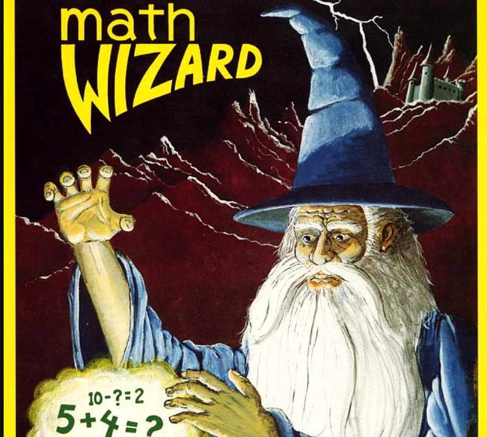
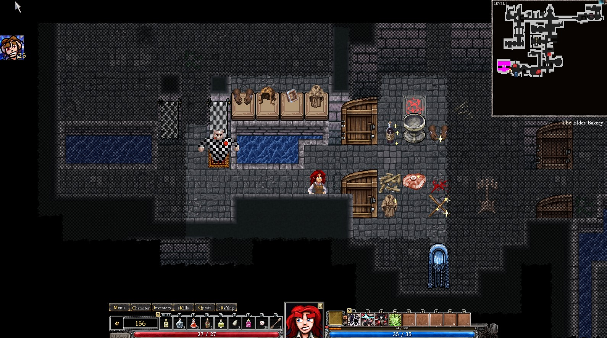

Broken and Loving It
Joel Haddock Mar 19, 2024
There's an inevitability that as you give a player more and more options, you start to expontentially increase the number of potential cominbations they can make from them.
That's just math.
If I give you four choices and say "pick two", there's only six possible sets you can choose. Not too bad, all things considered.
But if I double your options from four to eight, it doesn't just double the outcomes. Now there are twenty-eight possible combinations. Even if we leave the set of eight options the same but let the player pick three instead of two, well now we've got fifty-six outcomes.
I could keep doing math all day, but we're here to talk about roguelites.

Math: How Does It Work?
By the very nature of having a metaprogression, roguelites are almost always introducing new options to players. Whether it's new cards in Spire, new perks in Against the Storm, or new jokers in Balatro, the steady stream of choices is part of what keeps players doing run after run.
Even within runs themselves, because of randomization, players could see an endless number of different choices along the way.
Again, this can be very compelling to the player. As a designer, however, it's an absolute nightmare.
Take Balatro as a quick example. There are somewhere in the neighborhood of 150 jokers a player could potentially find. During the course of their run they will see some percentage of those as options, and a smaller subset of that to actually hold on. At any given time they could 0-5 jokers on their board, with the potential to add even more depending on what sort of bonuses they find along the way.
So given that, even at the most basic level of saying a set of 5 out of 150, that's 591,600,030 potential combinations of jokers.
Balancing for all of those outcomes is impossible. So what do you do?
Ben McGraw, producer of Dungeon of Dredmor (a more traditional roguelike, and very fun) says the answer is easy: embrace the chaos.
Not a roguelite, but it can be forgiven
Sure, you could minimize the impact of what the jokers do, or cap bonuses to keep things in a tight range, but where's the fun in that? This isn't some AAA multiplayer affair where everything has to be precisely balanced to keep everybody happy. No, these are roguelites - sometimes the most fun to be had is when they get very, very broken.
If you play roguelites, I'll bet the stories you share most about them involve times you felt like you were breaking the game. Spire decks where you were playing twenty or more cards a turn, or Noita*** dives where you put together wands that nuked half the map. When designers allow for things to just get *wacky*, that's often when games shine the most.
With the right combination, players might feel like they've broken the rules of the game entirely. And so what if it lets them absolutely crush a run? There are no other players pissed off by "imbalance", and now they've got a great story to tell. And, a lot of the time, they might never see that particular combination of elements again.
Embracing the broken is part of what can make roguelites some crazy, crazy fun.
And that's why roguelites are the best.
***Noita is a tricky one, as it has the scantest of meta-progressions. It's certainly in the roguelite spirit, though.
So What Is This?
Welcome to the Roguelite House, the place for all things roguelite.
If you don't know what a roguelite is, you should probably start here.
What're We Running Now?
- Against the Storm
- Balatro
Latest Posts
-
What Is A Roguelite?
Maybe you should start here.
-
Hades
Hades is the best Roguelite
-
Slay the Spire
Slay the Spire is the best Roguelite